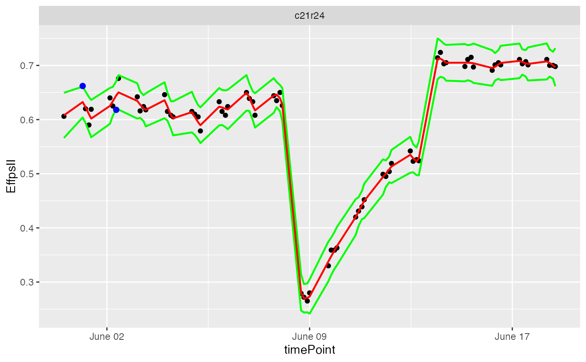
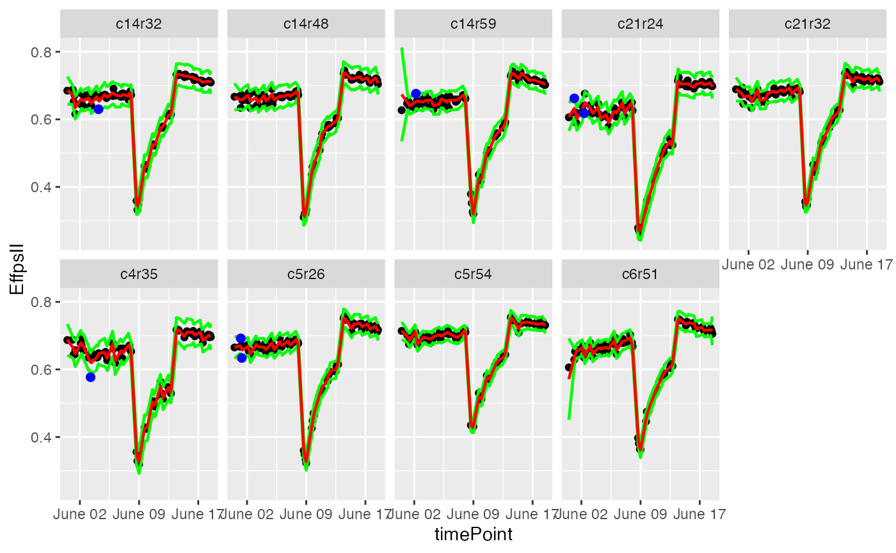

Plot the fitted local regression, confidence intervals and detected outliers for each plotId.
Usage
# S3 method for singleOut
plot(x, ..., plotIds = NULL, outOnly = TRUE, output = TRUE)Arguments
- x
An object of class singleOut.
- ...
Ignored.
- plotIds
A character vector of plotIds for which the outliers should be detected. If
NULL, all plotIds inTPare used.- outOnly
Should only plots containing outliers be plotted?
- output
Should the plot be output to the current device? If
FALSEonly a (list of) ggplot object(s) is invisibly returned. Ignored ifoutFileis specified.
See also
Other functions for detecting outliers for single observations:
detectSingleOutMaize(),
detectSingleOut(),
removeSingleOut()
Examples
## Create a TP object containing the data from the Phenovator.
PhenovatorDat1 <- PhenovatorDat1[!PhenovatorDat1$pos %in%
c("c24r41", "c7r18", "c7r49"), ]
phenoTP <- createTimePoints(dat = PhenovatorDat1,
experimentName = "Phenovator",
genotype = "Genotype",
timePoint = "timepoints",
repId = "Replicate",
plotId = "pos",
rowNum = "y", colNum = "x",
addCheck = TRUE,
checkGenotypes = c("check1", "check2",
"check3", "check4"))
## Select a subset of plants, for example here 9 plants.
plantSel <- phenoTP[[1]]$plotId[1:9]
# Then run on the subset.
resuVatorHTP <- detectSingleOut(TP = phenoTP,
trait = "EffpsII",
plotIds = plantSel,
confIntSize = 3,
nnLocfit = 0.1)
## Visualize the prediction by choosing a single plant...
plot(resuVatorHTP, plotIds = "c21r24", outOnly = FALSE)

## ...or a subset of plants.
plot(resuVatorHTP, plotIds = plantSel, outOnly = FALSE)
